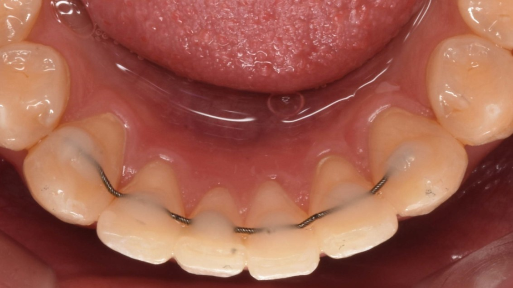
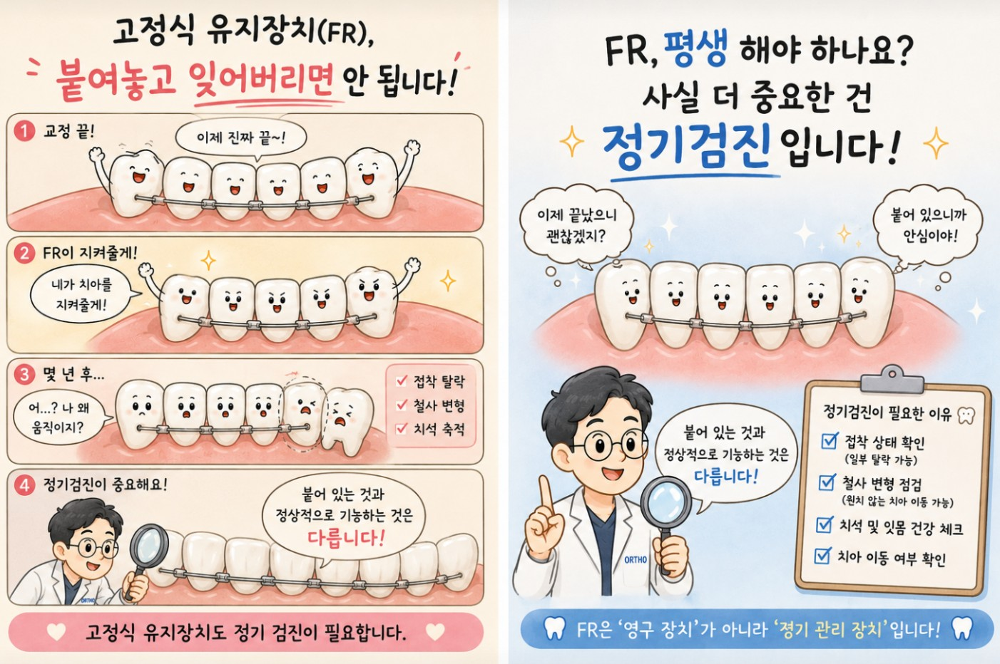

고정식 유지장치(fixed retainer) 평생 해야 하나요? 고정식 유지장치 붙어 있어도 정기 검진이 필요한 이유 (고정식 유지장치 착용 기간)
안녕하세요, 교정과 전문의 손창한입니다 :)
오늘은 교정 치료 후 정기 체크업을 하시는 환자분들과 자주 나누는 이야기를 포스팅해보려고 합니다. 유지장치 체크를 하다 보면 정말 자주 듣는 질문이 있는데요.

맞습니다.
오늘은 교정을 해보신 분이라면 다들 알고 있고, 안해보신 분이라면 '그런 것도 붙이고 있어야해?'라 생각하시는
"고정식 유지장치(Fixed retainer, FR)"에 대해 이야기해보겠습니다.
고정식 유지장치는 치아 안쪽(설측, 혀쪽)에 얇은 철사를 붙여 치아 배열을 유지하는 장치입니다. 특히 아래 앞니는 교정 치료 후 다시 틀어지려는 경향이 강하기 때문에 많은 환자분들께 시행하고 있습니다.
최근에는 성장기 어린이의 투명 교정치료 (ex. Invisalign First) 치료 후에도 새롭게 배열된 전치부를 안정적으로 유지하기 위해 FR을 사용하는 경우도 많아졌습니다. 투명교정과 철사교정 모두 치아를 원래 있던 위치에서 새롭게 배열한 것이기 때문에 기본적으로 FR의 필요성은 동일합니다.
결론부터 말씀드리자면 많은 경우에 장기간, 경우에 따라서는 거의 평생 유지하는 것을 권해드립니다.
치아는 신체 어느 조직과 동일하게 조금씩 조금씩 움직이고 변화하는 조직이기 때문입니다. 실제로 교정 치료를 받지 않은 분들도 나이가 들면서 아래 앞니가 조금씩 겹쳐지는 경우를 흔하게 볼 수 있습니다.
(저번 제 블로그 글에서 '나이가 들면 앞니가 틀어지는 이유'에 대해 상세히 설명드렸으니 참고하시면 좋겠습니다)

60대 교정 치료 가능할까요? 60대 앞니 교정 늦은 걸까요?
안녕하세요 교정과 전문의 손창한입니다 ^^ 얼마 전 아버지께서 전화가...
저는 개인적으로 특히 아래와 같은 경우에 해당한다면 장기적인 FR 유지를 더욱 권해드립니다.
- 하악 전치부 (아래 앞니 부위) — 가장 변하기 쉬운 부위입니다.
- 치료 전 공간(spacing)이 있었던 경우 — 공간은 다시 벌어지려는 경향이 강합니다.
- 회전이 심했던 치아 — 치아를 회전시켜 교정한 경우 다시 돌아가려는 힘이 강합니다.
- 총생(겹침)이 심했던 경우 — 배열 변화가 생기기 쉽습니다.
- 혀의 위치나 습관이 좋지 않은 경우 — 혀의 압력이 지속적으로 치아에 작용할 가능성이 큽니다.
교정치료를 받지 않으셨던 분이야, 세월이 가면서 치열이 변하는 것에 대해 크게 억울하지 않으실 수 있습니다.
그렇지만 시간과 비용을 들여 교정을 했는데! 시간이 지나며 다시 틀어진다면
설령 그것이 교정 치료 후 재발이 아닌, 노화에 따른 자연스러운 변화라 할지라도 더욱 아쉬울 수 있겠습니다.
따라서, 유지 장치는 교정 치료 후 해야 하는 귀찮고 거슬리는 것이 아니라 힘들게 얻은 치열을 오랫동안 안정적으로 유지하기 위한 안전장치라고 이해하시는 게 좋겠습니다^^

꽤 많은 분들이 고정식 유지장치를 '붙여놓고 잊어버린 채' 살아가십니다. 진료를 하다보면 "안 떨어졌으니까 괜찮은 줄 알았어요"라고 말씀하시는 분들도 종종 있으시구요. 바쁘디 바쁜 현대 사회 속에서 충분히 이해할 수 있는 일이지만, 고정식 유지장치도 정기적인 점검이 꼭 필요한 장치입니다.
첫 번째, 일부 접착이 떨어질 수 있습니다.
고정식 유지장치는 보통 앞니 6개에 접착되어 있습니다. 시간이 지남에 따라 접착제가 닳게 되는데, 한 치아에서만 접착이 떨어지는 경우 나머지 치아들이 유지장치를 붙잡고 있기 때문에 환자분이 인지하지 못하는 경우가 종종 있습니다. 문제는 이 상태에서 수개월이 지나면 떨어진 그 치아만 조금씩 이동할 수 있다는 것이죠.
그래서 저는 정기 체크업 때 접착제가 닳아 있어 조만간 떨어질 것 같은 경우, 증상이 없더라도 미리 수리해드리는 편입니다. 작은 수리를 미리 하는 것이 나중에 큰 재발을 막는 가장 확실한 방법이거든요.
두 번째, 와이어가 변형될 수 있습니다.
드물지만 유지장치 철사의 미세한 변형이나 예상치 못한 힘으로 인해 원하지 않는 치아의 이동이 발생하기도 합니다. 실제로 교정과에서 진행된 연구나 세미나를 보면, 유지장치가 붙어 있음에도 불구하고 예상치 못한 치아 배열 변화가 발생한 경우를 소개하곤 합니다.
따라서 유지장치가 "붙어 있다"는 사실만으로는 충분하지 않고, 정상적인 상태를 유지하고 있는지 정기적인 확인이 중요합니다.
세 번째, 치석 관리가 필요합니다.
아래 앞니는 원래 치석이 잘 쌓이는 부위입니다. 유지 장치가 아래 앞니에 위치하는 한 정기적인 스케일링과 검진을 통해 건강한 잇몸 상태를 유지하는 것이 중요합니다.
저는 교정 치료가 끝난 이후에도 환자분들의 치아 유지 상태를 꾸준히 확인하는 것을 매우 중요하게 생각합니다. 교정 치료 끝났으니 끝? 제가 배운 교정학은 그렇지 않다고 합니다.
내 입 안에 무언가를 붙여 놓았다면, 붙어 있다는 사실만으로 안심하기 보다는 내 입속에서 정상적으로 잘 기능하고 있는지 주기적으로 확인하는 것이 중요하겠죠.
교정 치료는 장치를 제거하는 날 끝이 나겠지만,
예쁘게 정렬된 치아를 건강하게 유지해 나가는 과정은 시작일지도 모르겠습니다.
이 글을 읽으신 분들께서는 모쪼록 교정 후 정기 검진과 유지장치 관리 잘 챙기셔서 오래도록 아름다운 미소를 유지하시길 바랍니다 :)
이상 교정과 전문의 손창한이었습니다.
이 글은 일반적인 정보 제공을 목적으로 작성되었습니다.
개인별 유지 관리 방법은 담당 교정과 전문의 선생님과 상담하시길 권장드립니다.